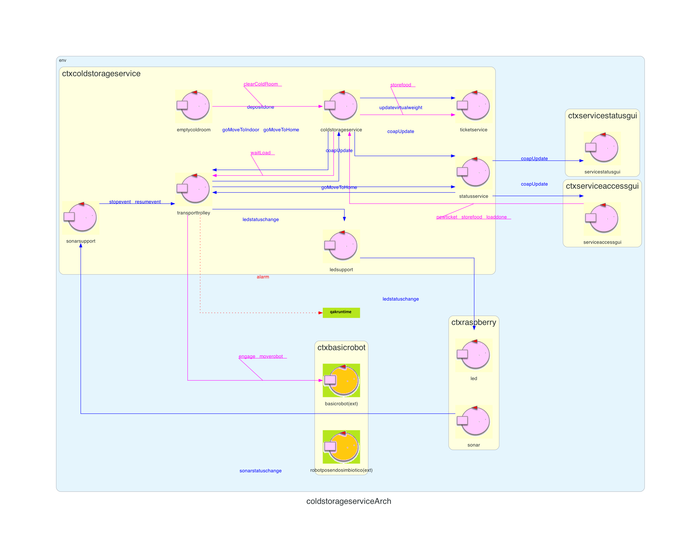
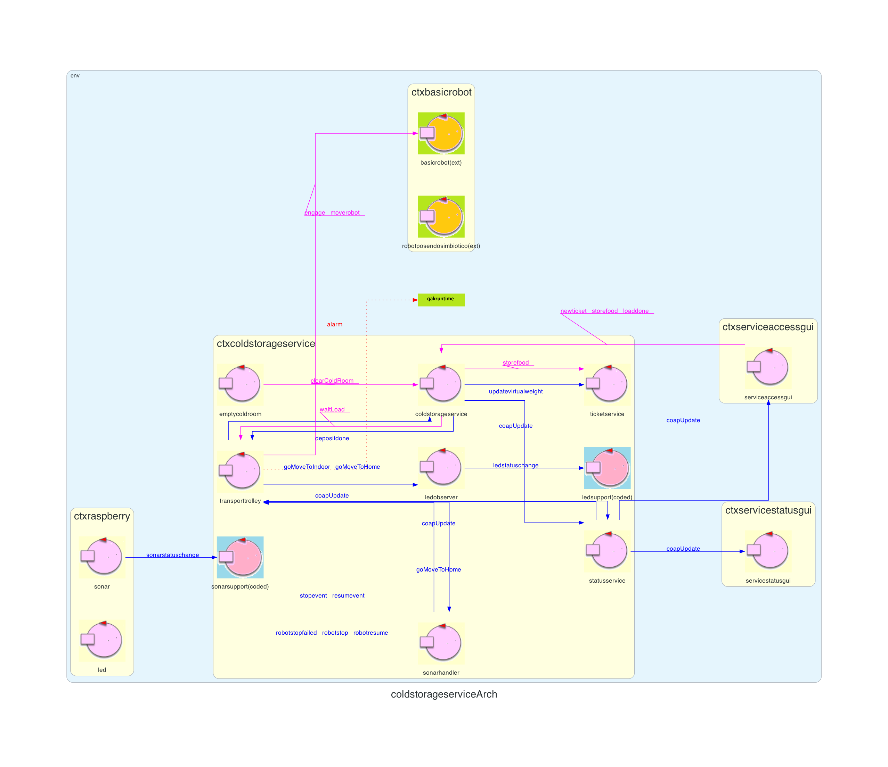
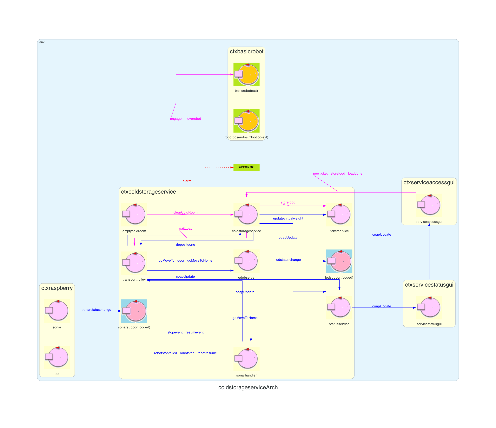

Introduction
Lo Sprint2 ha prodotto la seguente architettura:

Requirements
The system includes a a Sonar and a Led connected to a RaspnerryPi.
The Sonar is used as an ‘alarm device’: when it measures a distance less that a prefixed value DLIMT, the transport trolley must be stopped; it will be resumed when Sonar detects again a distance higher than DLIMT.
The Led is used as a warning devices, according to the following scheme:
Goal di questo sprint:
- the Led is off when the transport trolley is at HOME
- the Led blinks while the transport trolley is moving
- the Led is on when transport trolley is stopped.
- While the transport trolley is moving, the Alarm requirements should be satisfied. However, the transport trolley should not be stopped if some prefixed amount of time (MINT msecs) is not passed from the previous stop.
Goal di questo sprint:
- realizzazione degli Alarm Requirements (componenti Sonar e Led)
Requirement analysis
Dall'analisi dei requisiti si evince che:
- DLIMT è rappresentato con un valore intero positivo
- Il led deve lampeggiare durante tutta la durata della deposit action
- Il led sarà attivo nel caso in cui il robot venga fermato dal sonar (il quale ha rilevato una distanza minore di DLIMT) o nel caso in cui ci sia una collisione
- MINT è un valore intero positivo che rappresenta il tempo minimo che deve intercorrere tra due allarmi emessi dal sonar (Alarm Condition)
- home, il robot si trova fermo in home (coordinate (0,0))
- moving, il robot è in movimento e sta eseguendo una deposit action
- stopped, il robot è stato fermato dal sonar o ha avuto una collisione
Analisi del Problema
Led e sonar fisici
Su un RaspberryPi esterno all'applicazione sono collegati sonar e led fisici che vengono utilizzati rispettivamente come alarm e warning devices. Tali dispositivi sono d'interesse all'applicazione coldstorageservice in quanto deve rispettivamente ricevere/inviare informazioni da/verso di essi.Tali informazioni sono d'interesse al transporttrolley in quanto è l'unico che conosce il suo stato e l'unico che può interagire col BasicRobot. Per questo motivo si potrebbe pensare di far interagire direttamente led e sonar con esso. Questo però violerebbe il principio di singola responsabilità e renderebbe l'attore inutilmente più complesso. La soluzione migliore è quella di separare le funzionalità integrando altri due attori, LedSupport e SonarSupport, che si occuperanno di interagire con i singoli componenti.
Sonar
Il sonar è un dispositivo esterno che rileva distanze che sono d'interesse all'applicazione. La responsabilità applicativa per la gestione dei suoi rilevamenti può essere affidata a un supporto, SonarSupport. Non tutti i dati del sonar sono d'interesse all'applicazione, ma solo il passaggio da una distanza minore di DLIMT ad una maggiore (o viceversa). Per questo motivo si può pensare di aggiungere direttamente sul componente in esecuzione sul RaspberryPi della logica applicativa per filtrare i dati rilevati ed emettere solo quelli significativi. Così facendo si riduce il traffico generato dal RaspberryPi, avendo però come effetto collaterale una dipendenza generata dal protocollo di comunicazione stabilito tra i componenti. Dato che il traffico generato è molto elevato gli effetti positivi superano l'unico svantaggio di tale soluzione.L'attore SonarSupport dovrà quindi, quando necessario, inviare degli eventi al transporttrolley in quanto queste informazioni sono di massima priorità e devono essere gestite immediatamente. Utilizzando messaggi o richieste queste sarebbero inserite nella coda apposita generando un ritardo nella loro gestione.
Led
Il led è anch'esso un dispositivi esterno che indica lo stato attuale (home, moving o stopped) del transporttrolley. La responsabilità applicativa per la gestione dei suoi cambiamenti di stato può essere affidata a un supporto, LedSupport. Dal coldstorageservice non saranno emessi i singoli segnali che dovranno poi essere inviati al led fisico ma solamente lo stato in cui dovrà transitare. Sarà quindi compito di una logica applicativa locale quella di interpretare tali stati e convertirli in impulsi verso il led fisico. Anche in questo caso si costruisce una dipendenza tra il coldstorageservice e il RaspberryPi ma come nel caso precedente il disaccoppiamento supera di gran lunga gli effetti negativi.L'attore LedSupport si occuperà di inviare lo stato corrente del transporttrolley al RaspberryPi. In questo caso non è necessario l'utilizzo di eventi in quanto l'attore sarà in attesa di un solo messaggio che sarà quindi gestito immediatamente.
Architettura logica

*gli eventi locali
Dall'architettua logica possiamo evidenziare i nuovi componenti:
*gli eventi locali
stopevente
resumeventsono stati rappresentati come dispatch per poterli visualizzare nell'immagine.
Dall'architettua logica possiamo evidenziare i nuovi componenti:
- Sonar: componente fisico situato su RaspberryPi che si occupa di rilevare distanze ed utilizzato come alarm device
- Led: componente fisico situato su RaspberryPi usato come warning device
- SonarSupport: attore utilizzato per gestire le interazioni tra transporttrolley e Sonar
- LedSupport: attore utilizzato per gestire le interazioni tra transporttrolley e Led
Progettazione
Contesto RaspberryPi
Sonar fisico
Per la progettazione del sonar fisico si è seguito il principio di singola responsabilità. Per farlo sono stati sviluppati tre script python:- SonarDevice.py (link all'implementazione): si occupa di leggere i dati prodotti dal sonar fisico e di comunicarli al
SonarFilter.py
- SonarFilter.py (link all'implementazione): si occupa di filtrare le misurazioni ricevute tramite il seguente controllo:
//last rappreseta l'ultimo valore letto dal sonar fisico //v rappresenta il valore attuale letto dal sonar fisico //limit rappresenta DLIMT if((last <= limit and v > limit) or (last > limit and v <= limit))
Grazie a questo vengono scartate tutte le misurazioni che non provocano l'emissione del messaggiosonardata
. - SonarController.py (link all'implementazione): riceve le misurazioni dal
SonarFilter.py
, le quali vengono inviate tramite socket all'attore SonarSupport (spiegato in seguito) in esecuzione sul contesto ColdStorageService
SonarDevice.py,
SonarFilter.pye
SonarController.pyviene realizzata tramite pipe.
Led fisico
Anche per la progettazione del led fisico è stato seguito il principio di singola responsabilità. Per la gestione del led fisico sono stati sviluppati due script python:- LedReceiver.py (link all'implementazione): si occupa di ricevere, tramite socket, una stringa che rappresenta lo stato attuale del robot (
home
,moving
,stopped
). Quest'informazione viene ricevuta dall'attore LedSupport (in esecuzione sul contesto ColdStorageService) e viene inoltrata aLedDevice.py
- LedDevice.py (link all'implementazione): in base allo stato ricevuto gestisce il led fisico (accesso, spento, lampeggiante)
LedReceiver.pye
LedDevice.pyviene realizzata tramite pipe.
Contesto ColdStorageService
Eventi e messaggi emessi
alarm
(implementazione): evento inviato dal transporttrolley al BasicRobot per interrompere l'esecuzione del robot; inviato solamente se viene rispettata la Alarm Conditionsonardata
(implementazione): messaggio inviato quando è stata rilevata una distanza che può provocare l'interruzione o la ripresa dell'esecuzione del robot. Il messaggio viene inviato con un parametro stringa che può assumere i valoriHIGH
oLOW
, rispettivamente inviati quando la distanza è maggiore o minore di DLIMTstopevent
(implementazione): evento inviato da SonarHandler (spiegato in seguito) al transporttrolley per interrompere la deposit action; inviato solamente dopo aver ricevutosonardata : sonardata("HIGH")resumevent
(implementazione): evento inviato da SonarHandler al transporttrolley per riprendere la deposit action; inviato solamente dopo aver ricevutosonardata : sonardata("LOW")ledstatuschange
(implementazione): messaggio inviato da LedObserver (spiegato in seguito) all'attore LedSupport per poter gestire correttamente i cambiamenti di stato del led fisico
SonarSupport
CodedQActor che implementa la logica necessaria per la gestione di un sonar fisico SONAR HC-SR04 (classe KotlinsonarHCSR04Support23.kt).
- Tale attore si connette tramite socket al componente
SonarController.py
, da cui riceve le misurazioni del sonar fisico - Queste misurazioni vengono, successivamente, lette dall'attore SonarSupport e utilizzate, da quest'ultimo, per emettere il messaggio
dispatch sonardata : sonardata(D)
.
SonarHandler
Tale attore è in attesa dei messaggisonardataemessi da SonarSupport. È stato implementato per separare le funzionalità di ricezione delle informazioni (eseguito da SonarSupport) e l'invio dei corrispettivi eventi al transporttrolley. In particolare, ogni volta che riceve tale evento transita nello stato
handlesonardata(implementazione) dove in base allo stato attuale del transporttrolley viene inviato l'evento
stopevento
resumeventper, rispettivamente, bloccare e riattivare il robot.
LedObserver
Tale attore osserva il transporttrolley tramite la primitivaobserveResourcein modo tale da ricevere i messaggi di
updateResourceinviati da esso. È stato implementato per separare le funzionalità di invio delle informazioni (eseguito da LedSupport) e la ricezione dei messaggi dal transporttrolley. Il messaggio di
updateResourceviene inviato dal transporttrolley ogni volta che cambia di stato e ha la seguente struttura:
updateResource [# "transporttrolleystatus(Status)"#]dove Status può assumere i valori
home,
movinge
stopped. In particolare, ogni volta che riceve tale messaggio transita nello stato
doObservenel quale distingue lo stato attuale del transporttrolley per emettere il corretto il messaggio
ledstatuschange(implementazione).
LedSupport
CodedQActor per la gestione del led fisico (classe KotlinledSupport23.kt) ed è connesso tramite socket al componente
LedReceiver.py.
- Tale attore si mette in attesa dei messaggi
ledstatuschange
provenienti daLedObserver
- Grazie ad essi entra a conoscenza dello stato del robot (
home
,moving
,stopped
) e invia tale informazione al componenteLedReceiver.py
TransportTrolley - Gestione di stopevent e resumevent
L'attore transporttrolley si iscrive al SonarHandler, tramite la primitivasubscribeToLocalActor, in modo da poter ricevere gli eventi
stopevente
resumevent. Nel caso in cui il robot sia in movimento e riceva l'evento
stopeventtransita nello stato
checkSonarData(implementazione).
Quindi, nello stato
checkSonarDatacontrolla se è passato un tempo maggiore di DLIMT dall'ultimo allarme ricevuto:
- In caso affermativo invia l'evento alarm al BasicRobot, il quale farà fermare il robot. Successivamente, se il robot si è realmente fermato, il transporttrolley transita
nello stato
stopped
dove rimane in attesa dell'eventoresumevent
per poter riprendere l'esecuzione. - Altrimenti, l'allarme viene ignorato e il transporttrolley prosegue con quello che stava facendo.
stoppede riceva l'evento
resumevent, esso transita nello stato
resuming(implementazione) in cui sfrutta la variabile
GoingToper permettere al transporttrolley di riprendere la corretta esecuzione.
Architettura logica finale
Modello qak

*gli eventi locali

*gli eventi locali
stopevente
resumeventsono stati rappresentati come dispatch per poterli visualizzare nell'immagine.
Esecuzione sistema
Per poter eseguire il sistema è necessario avviare nel seguente ordine i vari componenti: BasicRobot, su RaspberryPi eseguire
python LedReceiver.py | python LedDevice.py, ctxcoldstorageservice, su RaspberryPi eseguire
python sonar.py | python SonarFilter.py | python SonarController.pye infine avviare le due GUI Serviceaccessgui e Servicestatusgui.